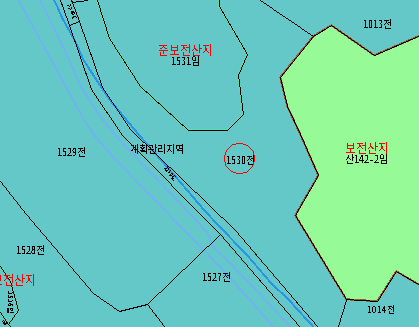
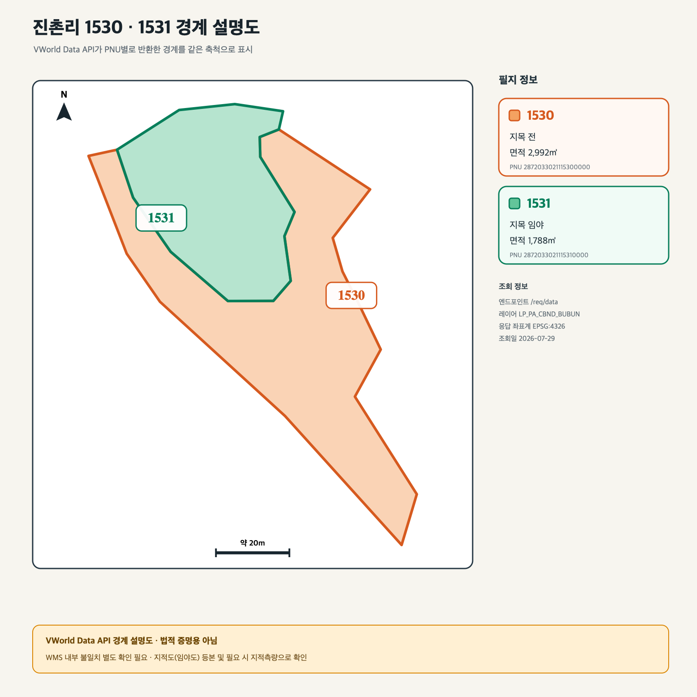

HAM MEDIA · 함께 보는 가족 문서 · 2026-07-29
작은아버지,
전은 같이 팔고
현장은 함께 확인해요.
이제 방향은 정해졌습니다. 진촌리 1530 전은 우리 지분을 합쳐 한 필지 전체로 매각하고, 1531 임야는 그대로 남깁니다. 외부 매수자를 찾기 전에 백령도에 가서 길과 경계, 실제 상태부터 제대로 확인하려고 합니다.
아직 예약하거나 매물을 내놓은 것은 아닙니다. 여행 날짜와 현지 이동수단을 정한 뒤 왕복 배표·숙소·차량 순서로 예약하면 됩니다.
01 · 함께 정한 방향
전은 한 덩어리로 팔고,
임야는 남깁니다.
백령도 지인은 매수 여력이 없다고 했습니다. 이제 지분만 따로 파는 것이 아니라 1530 전 전체를 외부 매수자에게 보여주는 준비를 해야 합니다.
01백령도에서 1530 전의 진입로·경계·경작 상태·배수를 직접 확인합니다.
02사진, 영상, 공식 지적도 등본을 모아 매수자가 이해할 자료를 만듭니다.
03백령도·옹진군과 인천권 중개업소에 전체 매각 조건으로 문의합니다.
04매수 문의가 들어오면 두 사람이 함께 가격과 계약 조건을 정합니다.
02 · 지적도 확인
두 필지의 위치는 확인했지만,
경계는 공식 등본이 필요합니다.
토지이음 화면에는 1530 전과 1531 임야가 함께 보입니다. 다만 V-World API 경계는 두 필지가 크게 겹쳐 나와 실제 경계로 쓸 수 없었습니다.
토지이음 확인도면

가운데의 1530 전과 위쪽의 1531 임야를 함께 볼 수 있습니다. 위치 확인용 참고자료이며 법적 증명용 도면은 아닙니다.
V-World API 진단도

두 경계가 겹친 것은 실제 토지 모양이 아니라 API 결과의 충돌입니다. 매수자에게 경계도라고 제시하면 안 됩니다.
현장에 가져갈 것: 정부24 또는 관할 행정기관에서 발급한 지적도·임야도 등본. 정확한 경계 확정이 필요하면 지적측량을 따로 진행합니다.
03 · 배편과 출발 준비
08:30 인천 출발,
다음 날 13:30 백령 출발이 좋습니다.
인천항 연안여객터미널(옹진행)
인천광역시 제물포구 연안부두로 70. 08:30 배라면 늦어도 07:20까지 도착하는 일정으로 잡습니다.
백령용기포항 여객터미널
인천광역시 옹진군 백령면 백령로 68-85. 돌아오는 날 12:20까지 도착해 차량을 반납하고 발권합니다.
| 배 | 인천 출발 | 백령 출발 | 편도 시간 | 추천 |
|---|---|---|---|---|
| 코리아프라이드 | 08:30 | 13:30 | 약 3시간 40분 | 1박 2일 현장답사에 가장 좋음 |
| 코리아프린세스 | 12:30 | 07:00 | 약 4시간 | 대체편으로 확인 |
토요일·일요일에도 정기편이 있습니다.
다만 날씨·파도·선박 사정으로 실제 시각과 운항 여부가 바뀔 수 있습니다. 여행 날짜의 예매 화면과 출발 당일 운항정보를 다시 봐야 합니다.
왕복 사전예약을 사실상 필수로 봅니다.
빈 좌석이 있으면 현장 발권도 가능하지만 주말·성수기에 돌아오는 배가 없으면 일정 전체가 무너집니다. ‘가보고 싶은 섬’에서 왕복을 함께 예약합니다.
공식 승선권 예매 열기| 2026년 7월 기준 | 기본운임 | 유류할증료 | 편도 합계 | 왕복 합계 |
|---|---|---|---|---|
| 평일 정상가 | 71,700원 | 12,600원 | 84,300원 | 168,600원 |
| 토·일·공휴일 | 78,700원 | 12,600원 | 91,300원 | 182,600원 |
할인: 인천시민 일반석은 증빙 시 편도 1,500원으로 안내됩니다. 타시도민은 평일 1박 이상 체류 등 조건을 충족하면 70% 지원 대상이 될 수 있지만 여름 특별수송기간·토요일 입출도·일요일 출도 등 제외 조건이 있습니다. 토지 소유만으로 도서주민 할인이 되지는 않습니다. 할인 후에도 유류할증료는 별도이므로 예매 화면의 최종금액을 확인합니다.
- 사진이 붙은 실물 신분증과 할인 증빙 준비
- 출항 1시간 전 터미널 도착
- 예약 승선권은 30분 전까지 수령
- 최소 10분 전 개찰구 통과
- 기본 30분 1,000원
- 이후 15분마다 500원
- 24시간마다 최대 10,000원
- 약 34시간 주차 시 약 20,000원 예상
04 · 백령도 안에서 이동하기
렌터카를 먼저 잡고,
없으면 택시를 예약합니다.
백령도행 여객선에는 개인 승용차를 실을 수 없습니다. 현장답사는 대기와 재방문이 생길 수 있어 렌터카가 편하고, 운전을 쉬고 싶다면 택시 기사와 시간·총액을 미리 합의하는 편이 안전합니다.
배표를 정한 뒤 바로 전화
- 나나렌터카 032-836-6699
- 경인렌터카 032-836-8400
- 차놀자 백령도지점 010-3505-9306
- 한솔네트웍스 공개번호 재확인 필요
현재 차종과 1박 2일 가격은 공식 공개자료에서 확인되지 않았습니다. 전화로 용기포항 인수·반납, 전체요금, 자차보험·면책금, 연료, 운전자 조건, 결항 연장료를 한 번에 확인합니다.
이동경로와 총액을 먼저 합의
- 영암택시 010-6329-1779
- 충열택시 032-836-1302
- 길택시 010-6343-7080
- 황금택시 032-836-0065
- 김인택 택시 010-7278-4888
- 일갑택시 010-7101-0155
공개 정찰요금과 온라인 예약 창구는 확인하지 못했습니다. 용기포항 → 진촌리 1530·1531 → 진촌 숙소, 대기시간, 다음 날 항구 이동까지 말하고 총액을 물어봅니다.
05 · 1박 2일 현장답사
관광보다 땅 확인을 먼저 합니다.
1530 전의 매각자료를 만드는 날
- 07:20인천항 연안여객터미널 도착
- 08:30코리아프라이드 출항
- 12:10 전후용기포항 도착, 렌터카 또는 택시 인수
- 13:20~16:301530·1531 경계, 진입로, 경작·배수·경사 확인
- 16:30~17:10공도에서 필지까지 끊기지 않는 영상 촬영
- 저녁진촌권 숙박, 다음 날 운항 재확인
빠진 증거를 채우고 돌아오는 날
- 07:30인천행 운항상태 확인
- 08:00~09:30누락 사진, 도로 폭, 회차와 배수 재확인
- 09:40~11:20시간이 남으면 사곶해변 또는 두무진 한 곳
- 11:30점심·짐 정리
- 12:20용기포항 도착, 차량 반납·발권
- 13:30인천행 출항, 17:10 전후 도착 예상
결항 대비: 실제 운영은 ‘1박 2일 + 비상용 1박’으로 생각합니다. 귀경 다음 날 오전은 중요한 약속을 비우고, 약과 속옷·충전기는 하루 더 머물 수 있는 분량을 챙깁니다.
06 · 챙겨야 할 것
배를 타는 준비와
땅을 보는 준비를 나눠 챙깁니다.
- 실물 신분증과 할인 증빙
- 왕복 승선권 예약내역
- 운전면허증과 렌터카 확인 문자
- 숙소 연락처와 결항 연장 규정
- 멀미약·개인 상비약
- 우의·바람막이·여벌옷
- 공식 지적도·임야도 등본
- 휴대전화 오프라인 지도
- 보조배터리와 충전선
- 줄자 또는 레이저 거리측정기
- 장화나 미끄럽지 않은 신발
- 물·간식·메모도구
촬영 주의: 사람 얼굴·차량번호와 군부대·초소·철책·통제표지는 찍지 않습니다. 드론은 가져가지 않는 편이 안전합니다.
07 · 공식 확인처
예약 전 다시 볼 곳
이 문서의 범위
- 문서 상태: HTML 보기본 · 정본 아님
- 확인 범위: 2026년 7월 29일 공개된 공식 시간표·요금·터미널·현지교통 연락처와 두 필지 참고도면
- 다음 문: 실제 여행 날짜를 정하고 왕복 배표·렌터카·숙소 순서로 예약하기
- 완료 ≠ PASS: 조사와 화면 작성은 마쳤지만 예약·매물 등록·외부 발송은 아직 하지 않음